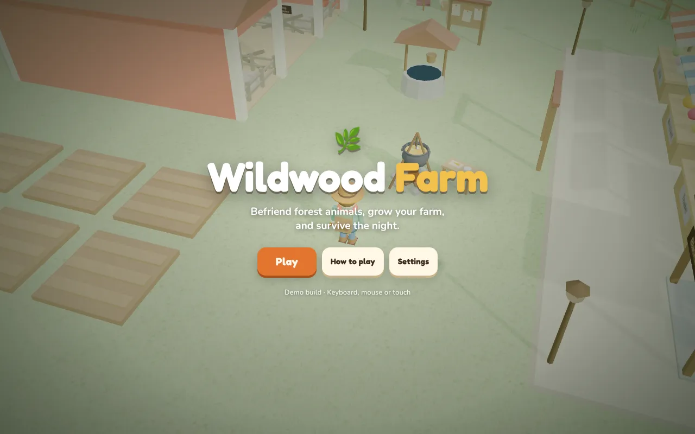
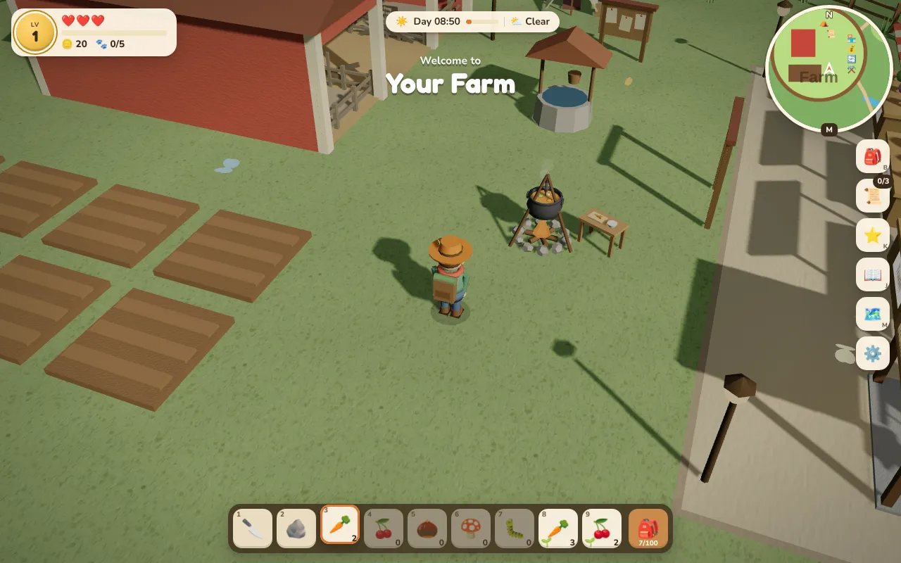

Personal project, 3D browser game
Wildwood Farm
A cozy 3D game I designed and built, where you earn an animal's trust instead of catching it. By day you farm, fish, cook and forge; at night you defend the farm from wolf raids, so the calm days feel earned.
The design


The mission
In Wildwood Farm you befriend animals instead of catching them. You offer the food an animal loves and stay still while its trust fills, and friends move into your barn and leave you gifts.
Around that, you grow and cook crops, fish the creek, forge better weapons, and hold the farm through wolf raids at night.
What I did
- Gameplay systems: taming, farming (rain makes crops grow twice as fast), fishing with five fish that bite at different times and weather, cooking, and forging at the Blacksmith from enemy drops.
- Night raids: programmed wolf raids that players fend off with gates, watchtowers and spike traps, with a morning report after each raid night.
- Walking buddy: any barn animal can follow the player, dig up treats and warn about wolves.
- Controls and saves: playable on keyboard, mouse or touch, with progress saved in the browser.
The architecture
- Rendering
- three.js r128
- Code
- one index.html in plain JavaScript, no build step
- Saves
- the browser's local storage
- Hosting
- GitHub Pages